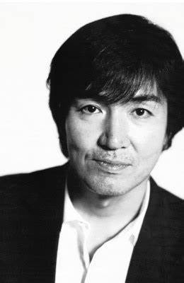

作家生涯
- 1958年出生於大阪府大阪市，
- 學生時代開始接觸推理小說，例如松本清張與小峰元。
- 東野圭吾在大學畢業後，於汽車零件供應商擔任工程師，
- 同時利用空閒時間寫小說，
- 並將把寫好的作品寄去參加江戶川亂步獎。
- 東野圭吾在27歲時獲得大獎，令他信心大增，
- 加上獲獎一事被所屬公司知曉，
- 邊工作邊寫作的生活受到了一定影響，
- 遂毅然於1986年3月辭職奔赴東京，開始了職業作家的道路。

寫作風格
- 早期以校園推理起家
- 以縝密細緻的劇情佈局獲得「寫實本格派」美名
- 後期的創作逐漸突破傳統推理的框架
- 作品兼具文學性和娛樂性，不停帶給讀者新鮮的閱讀感受。
- 曾表示受到想活用科學知識的念頭驅使而寫出科學推理系列。
- 目前為止曾在多個作品中登場的角色有加賀恭一郎、湯川學、天下一大五郎、竹內忍、新田浩介五人。
- 作品頗受影視界青睞
- 絕大多數長篇作品皆被改編成電影、電視劇或舞台劇。
代表作品
改編電影
解憂雜貨店電影版預告